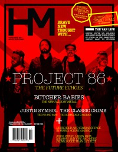

HM
Nov 2014, #184
| Cover |
|---|
|  |
 Online Exclusively Online Exclusively |
| Writers in this Issue |
| Francis, Matt Gonzales, Jordan Green, Tommy Huncherick, Sean Key, Nathan Lake, Nate Rickaby, Ben Simula, Collin Stagg, David Vrana, Johnnie |
Project 86
Cover Feature:- "Future Echoes" by Jordan Gonzales, David Stagg
- "The Butcher Babes are the Hottest Thing in Metal" by David Stagg
- "A Second Decade of Crime" by Sean Huncherick
- Justin Symbol by David Stagg
- The Ghost Inside - Dear Youth by Nate Lake
- The Classic Crime - What Was Done, Vol. 1 by Sean Huncherick
- Silent Planet - The Night God Slept by Collin Simula
- Silence the Ocean - Broken Vessels by Nate Lake
- Despite My Pride - Cold Blood / Simple Math by Nathan Key
- Dead Leaves - Dead Leaves by Ben Rickaby
- Jake and the Midwest Mess - Ghost-Ship by Ben Rickaby
- "Home of the Loud" by Johnnie VranaLouder Than Life, Louisville, KY
- Comrades, Household by David Stagg
- "Finding a way to Get By" by Matt Francis
- "Bearing Witness for Truth" by Tommy Green
Relevant Links
Official web site of HMOnline back issue publication
Browsable issues from 2010-2015
This issue is available exclusively online.
You may be able to find HM in a library near you: Worldcat
© 2011 CMnexus. Last updated May 2025. Contact: editor -AT- cmnexus -DØT- org